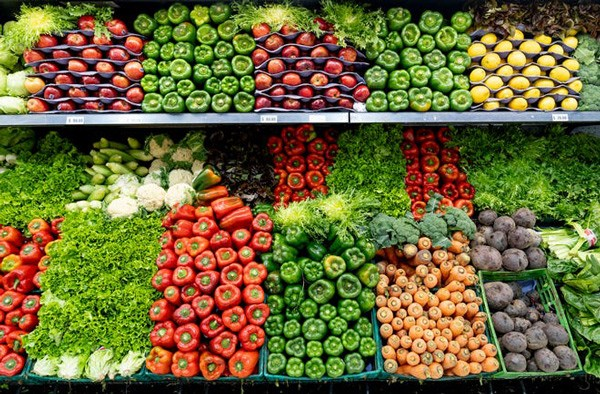
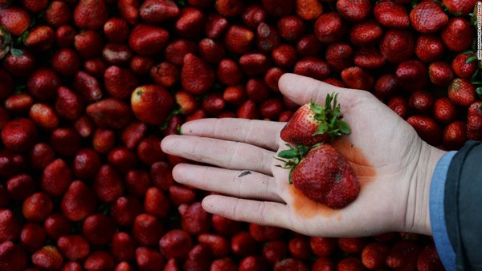

Những loại rau củ quả "bẩn" và sạch nhất, có loại người Việt ăn không hề ít
Ngày 26/10/2021 09:34 AM (GMT+7)
An toàn thực phẩm,Các loại rau củ giàu dinh dưỡngTrong suốt 6 năm, loại quả này luôn được đứng đầu bảng xếp những loại t rái cây và rau củ "bẩn" nhất.
Kể từ năm 2004, Nhóm Công tác Môi trường (EWG) đã công bố danh sách các loại trái cây và rau quả sạch và "bẩn" nhất mỗi năm được gọi là Dirty Dozen. Lưu ý: khái niệm "bẩn" này dùng để chỉ mức dư lượng thuốc bảo vệ thực vật cao.
Danh sách Dirty Dozen của EWG dựa trên dữ liệu thử nghiệm của Bộ Nông nghiệp Mỹ (USDA) để xếp hạng 46 loại thực phẩm bị nhiễm dư lượng thuốc trừ sâu nhiều nhất và ít nhất. Cơ quan này chuẩn bị thực phẩm như cách người tiêu dùng vẫn làm đó là rửa, bóc hoặc chà rửa sạch trước khi kiểm tra từng mặt hàng.

Năm nay, EWG cũng đưa ra một bản danh sách những loại rau củ quả "bẩn" và sạch nhất để người tiêu dùng cân nhắc.
Danh sách những loại rau củ quả "bẩn" nhất và sạch nhất
Sau khi tiến hành kiểm nghiệm, EGW đã đưa ra một số phát hiện, trong đó bao gồm:
- 70% sản phẩm tươi vô cơ được bán ở Mỹ có thuốc trừ sâu.
- 20 loại thuốc trừ sâu khác nhau được tìm thấy trong một mẫu duy nhất của ba loại rau xanh ở vị trí số 3.
- 115 loại thuốc trừ sâu đã được tìm thấy trên ớt chuông. Đây là số lượng thuốc trừ sâu nhiều nhất được tìm thấy trên một loại rau củ quả.
Trong danh sách các loại rau củ quả có hàm lượng trừ sâu cao nhất, dâu tây lần thứ 6 đứng trong bảng và năm nay, nó vẫn đứng đầu tiên. Báo cáo gần nhất cho biết, dâu tây là thực phẩm tươi sống có khả năng chứa dư lượng thuốc trừ sâu cao nhất kể cả khi đã rửa sạch. Kiểm tra cho thấy 90% dâu tây có chứa ít nhất một loại thuốc trừ sâu và 30% có dư lượng từ 10 loại thuốc trừ sâu trở lên.
Và mặc dù không có cam quýt được liệt kê trong đó nhưng EWG lưu ý rằng hơn 90% trái cây họ cam quýt có thuốc trừ sâu độc hại trên chúng khi được kiểm tra.
Còn trong danh sách rau củ quả sạch nhất, bơ đứng đầu tiên, ngoài ra còn có dứa, đu đủ, kiwi, ngô,.... Báo cáo cho thấy bơ và ngô ngọt ít bị ô nhiễm nhất, với ít hơn 2% mẫu cho thấy có dư lượng thuốc trừ sâu.
EWG cũng cho biết hầu hết các dư lượng thuốc trừ sâu mà USDA phát hiện đều nằm trong mức hạn chế do chính phủ yêu cầu. Nhưng giới hạn pháp lý không phải lúc nào cũng an toàn.

Tác động của thuốc trừ sâu tới sức khỏe
Các chuyên gia nói rằng việc tránh thuốc trừ sâu là đặc biệt quan trọng đối với trẻ sơ sinh và trẻ em, vì những tổn hại mà chúng có thể gây ra cho não đang phát triển. Một nghiên cứu năm 2020 cho thấy trẻ em bị suy giảm chỉ số IQ và có nguy cơ khuyết tật trí tuệ tăng cao do tiếp xúc với phốt phát hữu cơ, một loại thuốc trừ sâu phổ biến.
Hơn nữa, việc trẻ tiếp xúc sớm với thuốc trừ sâu qua người mẹ khi mang thai cũng rất có hại, có thể gây ra những biến chứng, dị tật cho thai nhi.

Jane Houlihan, giám đốc quốc gia về khoa học và sức khỏe của tổ chức Healthy Babies Bright Futures cho biết: “Bản chất thuốc trừ sâu là độc hại, và làm những gì bạn có thể để giảm phơi nhiễm là một ý tưởng thực sự tốt để bảo vệ sức khỏe gia đình bạn”.
Tin Liên Quan